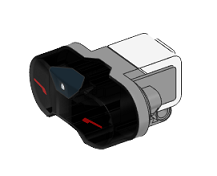

Infrared
-
class
devices.Infrared(ev3handle, layer=1, portnum=1, inputmode='proximity')[source] The class to represent the EV3 infrared sensor.
Set up an infrared sensor on port number 4
>>> from pyev3.brick import LegoEV3 >>> from pyev3.devices import Infrared >>> myev3 = LegoEV3(commtype='usb') >>> mysensor = Infrared(myev3, portnum=4, inputmode='remote')
- Parameters
ev3handle (object) –
LegoEV3instance representing the EV3 brick.layer (int) – The layer of the brick
1or2in a daisy-chain configuration.portnum (int) – The brick input port connected to the sensor. Possible values are
1,2,3, or4.inputmode (str) –
'proximity'detect proximity to an object'seeker'searches beacon (requires channel 1 and beacon on)'remote'takes remote control input
-
display_info() Displays a summary with the sensor information.
-
property
inputmode Contains the sensor input mode. Use this to change the mode on the fly (read/write).
-
property
output Contains the sensor output based on the inputmode (read only).
0to100(inputmode=’proximity’)tuple of integers (
azymuth,proximity) (inputmode=’seeker’)tuple of integers (
channel,buttoncode) (inputmode=’remote’)channel
1,2,3,4buttoncode
0= No button1= Button 12= Button 23= Button 34= Button 45= Buttons 1 and 36= Buttons 1 and 47= Buttons 2 and 38= Buttons 2 and 49= Beacon Mode is on10= Buttons 1 and 211= Buttons 3 and 4